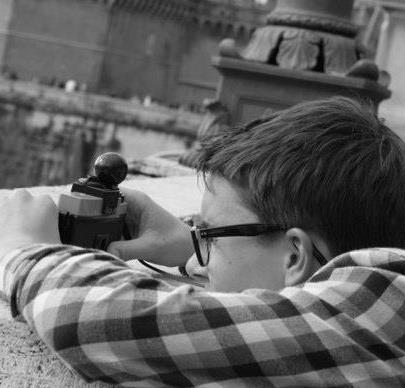

Robbe Haegeman
Curriculum Vitae
Over

© Bram Gasthuys
Geboorteplaats: Wetteren, 1 september 1995
Adres: Turkenhoek 5, 9860 Oosterzele
Contactgegevens: robbehaegeman@hotmail.com
+32/497 412 152
Opleiding
2007 - 2014 Sint-Franciscusinstituut Melle, ASO - Latijn-Moderne Talen2014 - 2017 Arteveldehogeschool Gent, Professionele bachelor journalistiek2016 - 2017 Hochschule der Medien Stuttgart, Erasmussemester, minor - Visual Communication2017 - heden Arteveldehogeschool Gent, Professionele bachelor Grafische en Digitale Media, Crossmedia-ontwerp Ervaring
2011 - heden opdiener 't Neerhof, eet-en praat caféjuli 2017 - september 2017 machine-operator Evidel NVmaart 2017 - heden reiswebsite GRANDE.beseptember 2016 - heden vrijwilliger bij Jeugdhuis De Schorpioen, Melle Kennis en vaardigheden
basiskennis HTML5 en CSS, JS
actieve kennis: Microsoft Office en Adobe-programma's als:
Premiere Pro,
Lightroom,
InDesign,
Audition,
Photoshop
Talen
Nederlands / moedertaal Frans / niveau B2 Engels / niveau C1 Duits / niveau B2 Spaans / niveau B2